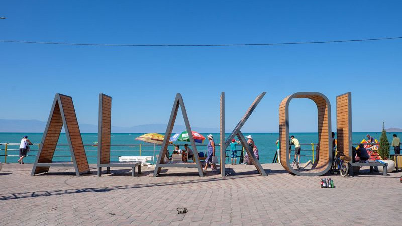

Ушарал District center: Usharal city Total area: 23.7 thousand sq. km. Population: 77.8 thousand people. Distance from Almaty: 565 km Distance from Taldykorgan: 300 km The climate of the district is sharply continental, temperate in mountainous and foothill areas, arid and windy in the valley. Soil zones range from high-altitude chernozems to sandy loams, gray soils and salt marshes. On the territory of the district there are rivers – Tentek, Chinzhala, Zhamant, Kyzyltal, Yrgayty. They feed the system of Alakol lakes – Alakol, Koshkarkol, Sasykkol, Korzhynkol, Zhalanashkol. The flora and fauna of the area is diverse. 180 species of birds nest on lakes and reservoirs, including the only relict gulls in the world. There are argali, mountain goats, bears, leopards, wolves, wild boars, korsaks, foxes and hares, in the lakes - carp, white amur, carp, silver carp, perch, walleye. The Alakolsky Nature Reserve operates. On the shores of Lake Alakol there are recreation areas "Shagala", "Zhalyn", "Pelican", the tourist base "Alakol" and guest houses of private entrepreneurs.
